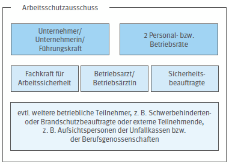

Abb. 2: Unternehmer und seine Führungskräfte bei der Delegation von Unternehmerpflichten
Wie ist der Arbeitsschutz im Betrieb organisiert, in welcher Rolle befinden sich Sicherheitsbeauftragte, welche Rechte und Pflichten haben sie und wie ist die Verantwortung definiert, die sie tragen? Welche Ziele und Aufgaben haben Sicherheitsbeauftragte und wie werden sie darauf vorbereitet? Die Beantwortung dieser grundlegenden Fragestellungen ist Voraussetzung für das Tätigwerden der Sicherheitsbeauftragten.
Unternehmer und Unternehmerinnen sind für eine funktionierende Arbeitsschutzorganisation in ihrem Betrieb verantwortlich. Dazu gehören neben der Einrichtung des Arbeitsschutzausschusses, der Bestellung von Fachkräften für Arbeitssicherheit, Betriebsärztinnen/Betriebsärzten und Sicherheitsbeauftragten sowie der Durchführung der Gefährdungsbeurteilung und der Übertragung der Pflichten auf Führungskräfte als wichtigste Bausteine:
Aufgabe der Sicherheitsbeauftragten ist es, die Unternehmerin/den Unternehmer oder die Führungskräfte bei diesen Aufgaben zu unterstützen.
Unternehmer und Unternehmerin sind rechtlich verantwortlich für den Arbeitsschutz in ihrem Betrieb. Sie müssen die erforderlichen Maßnahmen durchführen und umsetzen, um Arbeitsunfälle, Berufskrankheiten und arbeitsbedingte Gesundheitsgefahren zu verhindern. Zu diesen Maßnahmen gehört auch, für eine wirksame Erste Hilfe im Betrieb zu sorgen. Sie haben den innerbetrieblichen Arbeitsschutz zu organisieren und gegebenenfalls zu delegieren und sich von der Durchführung der von ihnen delegierten Aufgaben zu überzeugen.
Führungskräfte unterstehen der Unternehmerin/dem Unternehmer und tragen in ihrem Zuständigkeitsbereich die Verantwortung für Arbeitssicherheit und Gesundheitsschutz. Führungskräfte legen Aufgaben im Arbeitsschutz fest und weisen diese den hierfür befähigten Beschäftigten zu. Dabei beziehen sie die Fachkraft für Arbeitssicherheit und die Betriebsärztin/den Betriebsarzt mit ein.
Der Betriebs- oder Personalrat hat unter anderem die Aufgabe, sich für die Verbesserung des Arbeitsschutzes einzusetzen. Die Rechte und Pflichten sind im Betriebsverfassungsgesetz oder in den Personalvertretungsgesetzen des Bundes und der Länder festgelegt. Der Personal- oder Betriebsrat hat darauf hinzuwirken, dass die geltenden Gesetze, Verordnungen und Unfallverhütungsvorschriften eingehalten werden. Sind die Regelungen in Gesetzen und Verordnungen nicht abschließend geregelt, so hat der Betriebs- bzw. Personalrat ein Mitbestimmungsrecht über die Ausgestaltung von Fragen des Arbeitsschutzes im Betrieb. Hierzu vereinbart er Betriebsvereinbarungen und nimmt auch im Arbeitsschutzausschuss die Interessen der Beschäftigten wahr.
Die Fachkraft für Arbeitssicherheit ist in ihrer Funktion als Stabsstelle direkt der Betriebsleitung unterstellt. Sie hat keine Weisungsbefugnis, sondern berät die Unternehmerin/den Unternehmer zu allen Themen der Arbeitssicherheit einschließlich der menschengerechten Gestaltung der Arbeit. Die Fachkraft für Arbeitssicherheit berät und unterstützt unter anderem bei der:
Die Fachkraft für Arbeitssicherheit hat regelmäßige Begehungen durchzuführen. Sie informiert die Beschäftigten über die Unfall- und Gesundheitsgefahren und wirkt bei der Schulung der Sicherheitsbeauftragten mit.
In der Praxis werden oftmals die Bezeichnungen „Sicherheitsbeauftragte“ und „Sicherheitsfachkraft“ (besser: Fachkraft für Arbeitssicherheit) verwechselt. Zum besseren Verständnis sind in der Tabelle 1 die unterschiedlichen Merkmale zusammengestellt.
Tabelle 1: Gegenüberstellung Fachkraft für Arbeitssicherheit/Sicherheitsbeauftragte
| Fachkraft für Arbeitssicherheit | Sicherheitsbeauftragte | |
| Rechtsgrundlagen |
|
|
| Aufgaben | § 6 ASiG: Unterstützung des Arbeitgebers in allen Fragen der Arbeitssicherheit, einschließlich der menschengerechten Gestaltung der Arbeit, insbesondere durch:
|
§ 22 Abs. 2 SGB VII: Unterstützung des Unternehmers bei der Durchführung der Maßnahmen zur Verhütung von Arbeitsunfällen und Berufskrankheiten, insbesondere durch:
|
| Auswahlkriterien/Qualifikation |
|
Sicherheitsbeauftragte sollten über folgende Voraussetzungen verfügen:
|
| Bestellung | Schriftlich mit Zustimmung des Betriebs- oder Personalrats | (Meist) schriftlich unter Beteiligung des Betriebs- oder Personalrats, unter Mitwirkung der Fachkraft für Arbeitssicherheit und der unmittelbaren Vorgesetzten |
| Anzahl/Umfang der Tätigkeit | Die Anzahl ergibt sich aus Anlage 2 zu §2 Abs. 3 der DGUV Vorschrift 2 entsprechend der erforderlichen Einsatzzeit |
|
| Arbeitsrechtliche Stellung | Haupt- oder nebenamtlich oder durch Vertrag verpflichtet | Ehrenamtlich, freiwillig |
| Organisatorische Stellung im Betrieb | Der Leiterin/dem Leiter des Betriebs unterstellt; soweit mehrere Fachkräfte für Arbeitssicherheit bestellt sind, gilt dies für die leitende Fachkraft für Arbeitssicherheit | Bleibt den unmittelbaren Vorgesetzten (z.B. Meisterin/Meister, Abteilungs- oder Referatsleitung) unterstellt |
| Weisungsbefugnis | Keine Ausnahme: Leitende Fachkraft für Arbeitssicherheit gegenüber den anderen Fachkräften für Arbeitssicherheit | Keine |
| Verantwortung |
|
Keine rechtliche Verantwortung |
| Ausbildung | Drei Ausbildungsstufen mit Präsenzphasen, Selbstlernphasen, betrieblichem Praktikum und Lernerfolgskontrollen | Meist branchenorientierte Aus- und Fortbildungsveranstaltungen der Unfallkassen und Berufsgenossenschaften |
Die Betriebsärztin/der Betriebsarzt ist, wie die Fachkraft für Arbeitssicherheit, in einer Stabsstelle beratend und unterstützend für die Unternehmerin/den Unternehmer tätig bei der:
Die Betriebsärztin/der Betriebsarzt berät in allen Fragen des Gesundheitsschutzes, insbesondere bei arbeitsmedizinischen, arbeitspsychologischen, hygienischen und ergonomischen Fragen. Außerdem gehören die arbeitsmedizinische Vorsorge für die Beschäftigten, die arbeitsmedizinische Beurteilung der Arbeitsplätze, die Begehung der Arbeitsstätten sowie die Untersuchung der Ursachen arbeitsbedingter Erkrankungen zu den Aufgaben. Dabei sind Betriebsärztinnen und Betriebsärzte in der Ausübung ihrer Fachkunde weisungsfrei und unterliegen der ärztlichen Schweigepflicht.
Abb. 3: Unterschiedliche Sicherheitsbeauftragte
Sicherheitsbeauftragte sind von der Unternehmerin/vom Unternehmer bestellte Personen, die sie/ihn bei der Durchführung der Maßnahmen zur Verhütung der Arbeitsunfälle, Berufskrankheiten und arbeitsbedingten Gesundheitsgefahren unterstützen.
Sicherheitsbeauftragte müssen in allen Unternehmen mit regelmäßig mehr als 20 Beschäftigten bestellt werden. Ihnen kommt aufgrund ihrer Orts-, Fach- und Sachkenntnisse die Aufgabe zu, in ihrem Arbeitsbereich Unfall- und Gesundheitsgefahren zu erkennen und adäquat darauf zu reagieren sowie zu beobachten, ob die vorgeschriebenen Schutzvorrichtungen und -ausrüstungen vorhanden sind und benutzt werden. Sicherheitsbeauftragte sind ohne hierfür festgeschriebenen Zeitaufwand auf ihrer jeweiligen Arbeitsebene unterstützend tätig und treten gegenüber den Beschäftigten als Multiplikatoren auf. Sie bewirken durch ihre Präsenz und ihre Vorbildfunktion sowie durch ihr kollegiales Einwirken ein sicherheitsgerechtes Verhalten der Beschäftigten. Die Sicherheitsbeauftragten sind in ihrer Funktion ausschließlich ehrenamtlich tätig und können in keinem Fall die beratende Funktion einer Fachkraft für Arbeitssicherheit oder einer Betriebsärztin/eines Betriebsarztes ersetzen, sollten aber eng mit ihnen zusammenwirken. Sie sind auch Mitglied im Arbeitsschutzausschuss.
Die im Arbeitsschutz tätigen Sicherheitsbeauftragten werden manchmal mit anderen Beauftragten verwechselt, die eine ähnliche Bezeichnung aber mitunter sehr unterschiedliche Arbeitsaufgaben und andere Rechtsgrundlagen für ihre Arbeit besitzen (siehe Abbildung 3).
Die Unternehmerin/der Unternehmer hat nach § 11 des Arbeitssicherheitsgesetzes bei mehr als 20 Beschäftigten einen Arbeitsschutzausschuss (ASA) zu bilden. Der Ausschuss tagt mindestens viermal jährlich und dient dazu, Fragen der Arbeitssicherheit und des Gesundheitsschutzes von allgemeiner und übergeordneter Bedeutung zu besprechen. Außerdem sollen Entscheidungen vorbereitet werden, um den betrieblichen Arbeits- und Gesundheitsschutz voranzubringen. Ständige Mitglieder des ASA sind (siehe Abbildung 4):
Personelle Zusammensetzung des Arbeitsschutzausschusses

Abb. 4: Personelle Zusammensetzung des Arbeitsschutzausschusses
Zu den Sitzungen des Arbeitsschutzausschusses können je nach Erforderlichkeit weitere Personen hinzugezogen werden. Dies können sowohl innerbetriebliche (z. B. Vertretung der Schwerbehinderten, Brandschutzbeauftragte, Strahlenschutzbeauftragte, Immissionsschutzbeauftragte, Gewässerschutzbeauftragte, Laserschutzbeauftragte) als auch außerbetriebliche Fachleuchte sein (z. B. Aufsichtspersonen der Unfallkassen oder der Berufsgenossenschaften).
In großen Betrieben können, aufgrund ihrer Anzahl, nicht alle Sicherheitsbeauftragten an den Sitzungen des Arbeitsschutzausschusses teilnehmen. Gängige Praxis sind eine rotierende Teilnahme, die Entsendung eines oder mehrerer Sicherheitsbeauftragter durch Wahl aus dem Kreis aller Sicherheitsbeauftragten oder die Teilnahme in Abhängigkeit der zu behandelnden Themen oder Arbeitsbereiche.
Großbetriebe ermöglichen den Sicherheitsbeauftragten meist einen regelmäßigen Erfahrungsaustausch untereinander und mit der Arbeitgeberin/dem Arbeitgeber, Betriebs-/Personalrat sowie den Fachkräften für Arbeitssicherheit durch die Einberufung von Treffen aller Sicherheitsbeauftragten (z. B. Sicherheitskreis).
|
Praxis-Check
|
|
Die Protokolle der ASA-Sitzungen sollten so formuliert werden, dass den Sicherheitsbeauftragten der nötige Transfer der einzelnen Punkte vor Ort und die Weitergabe wichtiger Aspekte an die Beschäftigten erleichtert wird. Bewährt hat sich z. B. die Form einer To-do-Liste (wer, was, bis wann), in der bei der nächsten Sitzung geprüft werden kann, ob die besprochenen Maßnahmen umgesetzt wurden. |
Die Unternehmerin/der Unternehmer hat die Sicherheit und die Gesundheit der Beschäftigten bei der Arbeit zu gewährleisten und Verbesserungen anzustreben. Der erste Schritt dabei ist die Gefährdungsbeurteilung, die einen Prozess darstellt, Gefährdungen zu ermitteln und die damit verbundenen Risiken zu bewerten.
Die Beurteilung der Gefährdungen durch die Unternehmerin/den Unternehmer ist die Voraussetzung für das Ergreifen wirksamer und betriebsbezogener Arbeitsschutzmaßnahmen. Welche konkreten Schutzmaßnahmen im Betrieb erforderlich sind, ist durch eine Beurteilung der Arbeitsbedingungen festzustellen. Die Gefährdungsbeurteilung ist auch die Grundlage für die Festlegung der Rangfolge der zu ergreifenden Maßnahmen.
Die Gefährdungsbeurteilung besteht aus:
Die aus der Gefährdungsbeurteilung abgeleiteten Maßnahmen sind auf ihre Wirksamkeit hin zu prüfen und gegebenenfalls an sich ändernde Gegebenheiten anzupassen.
|
Praxis-Check
|
|
Um ihre Tätigkeit wirksam auszuführen, ist die Gefährdungsbeurteilung für Sicherheitsbeauftragte von entscheidender Bedeutung. Die Sicherheitsbeauftragten haben deshalb Zugriff auf die Gefährdungsbeurteilung, sind bei der Erstellung eingebunden, veranlassen durch aktuelle Hinweise deren Aktualisierung oder Ergänzung und werden über Änderungen zeitnah informiert. |
Die Unternehmerin/der Unternehmer und in ihrer/seiner Vertretung selbstverständlich auch die Betriebsleitung, die Meisterin/der Meister und andere Personen mit Weisungsbefugnis tragen Verantwortung für die Arbeitssicherheit und den Gesundheitsschutz der Beschäftigten. Art und Umfang der Verantwortung richten sich nach der betrieblichen Stellung und dem jeweiligen Aufgabengebiet. Sicherheitsbeauftragte tragen hingegen nicht mehr Verantwortung im Arbeitsschutz, wie jede/jeder andere Beschäftigte. Damit ergibt sich für sie auch kein zusätzliches Haftungsrisiko und deshalb können Sicherheitsbeauftragte auch keine Weisungen erteilen oder Aufsicht führen.
Unabhängig von der Verantwortung im Arbeitsschutz sind Sicherheit und Gesundheit bei der Arbeit jedoch nicht allein eine Sache der Unternehmerinnen/der Unternehmer und der Führungskräfte. Vielmehr müssen alle ihren Teil dazu beitragen, die Sicherheit im Betrieb zu gewährleisten und die Gesundheit der im Betrieb Tätigen zu erhalten.
Das Arbeitsschutzgesetz und die DGUV Vorschrift 1 „Grundsätze der Prävention“ enthalten Regelungen über das allgemeine Verhalten im Betrieb und auch über die Rechte und Pflichten der Beschäftigten, inklusive der Sicherheitsbeauftragten:
Ergänzend zur Verantwortung der Führungskräfte und der Mitwirkungspflichten der Beschäftigten hat der Gesetzgeber in § 22 Siebtes Buch Sozialgesetzbuch (SGB VII) bestimmt, dass in Unternehmen mit regelmäßig mehr als 20 Beschäftigten, unter Beteiligung des Betriebs- oder Personalrats, Sicherheitsbeauftragte zu bestellen sind. Als Beschäftigte gelten diesbezüglich u. a. auch Personen, die in Unternehmen zur Hilfe bei Unglücksfällen oder im Zivilschutz ehrenamtlich tätig sind.
Sicherheitsbeauftragte werden auf diese Weise als Multiplikatoren bei Fragen der Arbeitssicherheit und des Gesundheitsschutzes ehrenamtlich tätig. Sie helfen der Arbeitgeberin/dem Arbeitgeber bei ihren/seinen Aufgaben im Arbeitsschutz und wirken auf ein sicherheitsgerechtes Verhalten der Beschäftigten hin.
Ziel der Sicherheitsbeauftragten muss es sein, den Arbeitsschutz im Betrieb wirksam zu unterstützen, damit für alle Beschäftigten Sicherheit und Gesundheit bei der Arbeit in größtmöglichem Umfang gewährleistet sind.
Die Rolle der Sicherheitsbeauftragten
Sicherheitsbeauftragte unterstützen die Unternehmensleitung und die verantwortlichen Führungskräfte bei der Erfüllung ihrer Aufgaben im Arbeitsschutz und zwar unabhängig davon, ob eine Fachkraft für Arbeitssicherheit und/oder eine Betriebsärztin/ein Betriebsarzt bestellt sind.
Persönliche Vorteile sind mit dieser ehrenamtlichen Tätigkeit nicht verbunden. Es besteht lediglich Anspruch auf Zahlung des entsprechenden Arbeitsentgelts für die Dauer der Ausbildung und die Zeit zur Erfüllung der gesetzlichen Aufgaben. Wegen der Erfüllung der ihnen übertragenen Aufgaben dürfen die Sicherheitsbeauftragten nicht benachteiligt werden.
Unternehmerinnen und Unternehmer haben den Sicherheitsbeauftragten gegenüber folgende Punkte zu berücksichtigen:
Abb. 5: Sicherheitsbeauftragter im Gespräch mit Beschäftigten
Sicherheitsbeauftragte müssen in dem ihnen zugeteilten Bereich in der Rolle der sachkundigen und erfahrenen Mitarbeiterin oder Mitarbeiters anerkannt sein. Sie haben das Vertrauen ihre Vorgesetzten und Kolleginnen/Kollegen aufgrund ihres Wissens, ihrer Erfahrung und ihres Verhaltens. Um Vorgesetzte, Mitarbeiterinnen und Mitarbeiter von der Notwendigkeit für Sicherheit und Gesundheit bei der Arbeit zu überzeugen, gehen sie mit Geduld und Ausdauer an ihre Aufgaben heran.
Aufgaben der Sicherheitsbeauftragten
Stellen Sicherheitsbeauftragte fest, dass Einrichtungen im Betrieb nicht den Arbeitsschutz- oder Unfallverhütungsvorschriften entsprechen, eine vorgeschriebene Schutzvorrichtung fehlt oder Mängel aufweist, melden sie dies meist schriftlich den Vorgesetzten. Es empfiehlt sich, bei der Meldung die Erfahrungen der Kolleginnen und Kollegen aus der betrieblichen Praxis zu nutzen und den Vorgesetzten mögliche Lösungsansätze bereits mitzuteilen. Dabei achten Sicherheitsbeauftragte auf die Beseitigung des Mangels und erinnern notfalls so lange daran, bis diese erfolgt ist.
Stellen Sicherheitsbeauftragte fest, dass jemand Schutzeinrichtungen nicht ordnungsgemäß benutzt oder sich sonst in irgendeiner Weise sicherheitswidrig verhält, können sie aufgrund des unmittelbaren Kontakts zu den Kollegen und Kolleginnen informierend eingreifen. Sie gehören dazu, kennen die Gefahren an den einzelnen Arbeitsplätzen aus eigener Erfahrung und auch eventuelle Stärken und Schwächen im Kollegenkreis.
Werden die Hinweise und Empfehlungen nicht beachtet, müssen Sicherheitsbeauftragte durch Information der Vorgesetzten darauf hinwirken, dass von Seiten der Vorgesetzten Abhilfe geschaffen wird.
In der folgenden Tabelle 2 sind beispielhaft Handlungsanlässe und die übliche Art des Tätigwerdens aufgelistet.
Neu benannte Sicherheitsbeauftragte fragen sich vielleicht, mit welchen Aufgaben sie anfangen sollen. Es empfiehlt sich einen leichten Einstieg zu wählen, ein Thema etwa, womit sie sich besonders gut auskennen oder auf das sie sich vorbereiten können. Die Praxischecks, besonders in Abschnitt 4, bieten hier einen guten Einstieg.
Tabelle 2: Anlässe zum Tätigwerden der Sicherheitsbeauftragten und der jeweiligen Tätigkeit
| Handlungsanlass | Art des Tätigwerdens |
| 1. Unfall oder Beinahe-Unfall im Zuständigkeitsbereich |
|
| 2. Gesamtes Unfallgeschehen im Zuständigkeitsbereich | Beobachtung des Unfallgeschehens im Zuständigkeitsbereich, und zwar
|
3. Hinweise von Beschäftigten auf Mängel an Maschinen oder auf arbeitsbedingte Gesundheitsgefahren, z. B.
|
|
| 4. Persönliche Feststellung der Mängel, der Verhaltensfehler oder der arbeitsbedingten Gesundheitsgefahren während der normalen Arbeitstätigkeit im Zuständigkeitsbereich |
|
| 5. Regelmäßiger Rundgang im Arbeitsbereich | Inaugenscheinnahme der Arbeitsplätze, Einrichtungen und Verkehrswege:
|
| 6. Betriebsbesichtigung durch Vertreter der Unfallkasse, Berufsgenossenschaft (Aufsichtspersonen) oder durch Vertreter der für Arbeitsschutz zuständigen Landesbehörde |
|
| 7. Betriebsbegehungen durch Arbeitsschutzausschuss oder Fachkraft für Arbeitssicherheit, Betriebsärztin/Betriebsarzt Betriebs- oder Personalrat | Teilnahme an einem Rundgang innerhalb des Zuständigkeitsbereichs; im Übrigen weiter wie unter 6. beschrieben |
| 8. Informationen/Anweisungen durch Vorgesetzte oder im Rahmen der betrieblichen Arbeitsschutzorganisation |
|
| 9. Durchführung von Messungen und Ermittlungen im Zuständigkeitsbereich der Sicherheitsbeauftragten, z. B. bei der Erstellung der Lärmkataster oder bei Messungen luftfremder Stoffe/gefährlicher Stoffe | Wenn die Messergebnisse im Betrieb vorliegen und im Anschluss an die Unterrichtung durch die Unternehmerin/den Unternehmer, die Vorgesetzten, berücksichtigen die Sicherheitsbeauftragten die Ergebnisse bei ihrer Tätigkeit. |
| 10. Einstellung neuer oder Umsetzung einzelner Mitarbeiterinnen und Mitarbeiter im Zuständigkeitsbereich |
|
| 11. Sitzung des Arbeitsschutzausschusses nach § 11 Arbeitssicherheitsgesetz | Mindestens einmal vierteljährlich über Schwerpunkte des Arbeitsschutzes beraten; Anmerkung: Bei mehr als zwei Sicherheitsbeauftragten im Betrieb bestehen unterschiedliche Regelungen über die Teilnahme bzw. über die Vertretung der Sicherheitsbeauftragten im ASA (siehe 2.1 Arbeitsschutzausschuss). |
| 12. Systematische und häufige Mängel oder grundsätzliches Fehlverhalten |
|
Auswahl
Sorgfältig ausgewählte Sicherheitsbeauftragte sind in der Lage, die Unternehmerin/den Unternehmer in Fragen der Sicherheit und Gesundheit im Betrieb wirksam zu unterstützen. Geeignet sind Beschäftigte, die durch ihr Engagement am Arbeitsplatz und im Arbeitsschutz aufgefallen sind. Es hat sich nicht bewährt, neue Mitarbeiter oder Mitarbeiterinnen einzusetzen. Notwendige Voraussetzung ist das Interesse an den Aufgaben der Sicherheitsbeauftragten. Wichtig ist aber auch, dass die Mitarbeiterin/der Mitarbeiter im Kreis der Kolleginnen und Kollegen fachlich und persönlich anerkannt ist und zu überzeugen vermag. Soziale Kompetenz ist dafür unbedingt erforderlich. Kontaktfreude und Freude am Umgang mit Menschen sind weitere positive Merkmale. Neben der sozialen Kompetenz ist eine gute Beobachtungsgabe eine wesentliche Voraussetzung. Sicherheitsbeauftragte müssen die Fähigkeit haben, unsichere Verhaltensweisen und Arbeitsabläufe zu erkennen und ihre Auswirkungen auf Sicherheit und Gesundheit bei der Arbeit zu beurteilen.
Gute Kenntnisse über die in ihrem Arbeitsbereich vorkommenden Tätigkeiten, Arbeitsmittel und Arbeitsstoffe sowie die relevanten Arbeitsschutzvorschriften sind eine wichtige Grundlage für die Bewältigung ihrer Aufgaben. Für die „Frau“ beziehungsweise den „Mann vor Ort“ sind auch Kenntnisse in Bezug auf die Durchführung der Gefährdungsbeurteilung am Arbeitsplatz gefragt. Daher kommen nur jene Beschäftigten infrage, die über Betriebserfahrung verfügen und in den Bereichen tätig sind, für die sie auch als Sicherheitsbeauftragte zuständig sein sollen.
Da Sicherheitsbeauftragte keine Arbeitgeberverantwortung für den Arbeitsschutz haben, sollen auch keine Mitarbeiterinnen und Mitarbeiter mit Vorgesetztenfunktion ausgewählt werden. Durch die Auswahl von Beschäftigten ohne Weisungsbefugnis wird deren Unabhängigkeit gewährleistet. In Klein- und Mittelbetrieben oder in bestimmten Branchen kommt es vor, dass auch Vorgesetzte als Sicherheitsbeauftragte bestellt werden. Gründe sind z. B. hohe Fluktuation und nur wenig Festangestellte.
An der Auswahl der Sicherheitsbeauftragten sollte zweckmäßigerweise auch der Personenkreis beteiligt werden, der später mit dieser Person zu tun hat. Das bedeutet: Betriebsleiterin/Betriebsleiter, Meisterin/Meister, Abteilungsleiterin/Abteilungsleiter, Fachkraft für Arbeitssicherheit, Betriebs-/Personalrat und die Beschäftigten des vorgesehenen Zuständigkeitsbereichs.
In einigen Branchen und in sehr vielen Großbetrieben werden Sicherheitsbeauftragte ausgewählt, die eventuell in Zukunft als Führungskraft eingesetzt oder im Betriebs-/Personalrat tätig werden sollen. Besonders die kommunikativen Aspekte der Ausbildung, der regelmäßige Umgang mit Vorgesetzten und das Engagement in Gesprächen mit Kolleginnen und Kollegen bieten vielfältige Erfahrungen, die für die zukünftige Tätigkeit sehr gut genutzt werden können.
Bestellung
Die Bestellung der Sicherheitsbeauftragten erfolgt unter der Beteiligung des Betriebs-/Personalrats. Sie kann formlos erfolgen. Insbesondere in größeren Betrieben erfolgt die Bestellung allerdings über ein Formblatt oder eine Ernennungsurkunde, auf dem auch die Aufgaben der Sicherheitsbeauftragten kurz umrissen sind. Auch der Zuständigkeitsbereich ist auf diesem Formblatt aufgeführt (Muster einer Bestellungsurkunde siehe Abbildung 18).
Bekanntmachung
Die bestellten Sicherheitsbeauftragten und ihr Zuständigkeitsbereich müssen im Betrieb bekannt gemacht werden, damit sie ihre Tätigkeit erfolgreich ausüben können. Dies kann durch Aushang mit Foto in der jeweiligen Abteilung oder am „schwarzen Brett“ erfolgen oder durch eine entsprechende Beschilderung des jeweiligen Bereichs. Bei Abteilungsbesprechungen hat es sich bewährt, dass die/der neue Sicherheitsbeauftragte von der/dem Vorgesetzen vorgestellt und den Beschäftigten die Aufgaben und die Funktion der Sicherheitsbeauftragten erläutert werden.
Gleiches gilt für Betriebsversammlungen, dort kann der Betriebs-/Personalrat die Sicherheitsbeauftragten vorstellen. Eine Bekanntmachung im Intranet oder der Beschäftigtenzeitung ist empfehlenswert. Jeder Mitarbeiterin/jedem Mitarbeiter sollte die/der zuständige Sicherheitsbeauftragte bekannt sein. Dies gilt besonders für Betriebsneulinge, Zeitarbeitende und Beschäftigte aus der Arbeitnehmerüberlassung.
Auch beim Einsatz von Fremdfirmen hat es sich bewährt, dass Sicherheitsbeauftragte den Beschäftigten der Fremdfirmen bekannt gegeben werden. Grund dafür ist die ständige Präsenz und die Ansprechbarkeit der Sicherheitsbeauftragten im entsprechenden Arbeitsbereich.
Anzahl der Sicherheitsbeauftragten
Mit der DGUV Vorschrift 1 „Grundsätze der Prävention“ werden seit 2015 neue Wege zur Bestimmung der Anzahl der Sicherheitsbeauftragten beschritten. Ziel der neuen Regelung ist es, durch eine geeignete Auswahl und eine geeignete Anzahl Sicherheitsbeauftragter eine möglichst hohe Wirkung im Arbeitsschutz zu erzielen.
Die Unternehmerin/der Unternehmer legt fest, in welchen Bereichen Sicherheitsbeauftragte tätig werden. Die Ermittlung einer angemessenen Anzahl von Sicherheitsbeauftragten erfolgt hierbei unter folgenden fünf Kriterien, die in der DGUV Regel 100-001 „Grundsätze der Prävention“ näher erläutert sind:
Die Umsetzung der Neuregelungen
Alle fünf Kriterien sind zu berücksichtigen, damit Sicherheitsbeauftragte wirkungsvoll tätig werden können und feststeht, dass eine angemessene Anzahl Sicherheitsbeauftragter im Unternehmen ermittelt worden ist. Im Regelfall erfolgen die Festlegungen innerhalb der Unternehmen nach einer Diskussion im Arbeitsschutzausschuss, weil dann alle betrieblichen Akteure des Arbeitsschutzes eingebunden worden sind. Zur Unterstützung der Diskussion im ASA stellen die einzelnen Unfallversicherungsträger branchenspezifische Empfehlungen mit konkreten Beispielen und Vorschlägen für die Vorgehensweise in den Unternehmen zur Verfügung. Die branchenspezifischen Empfehlungen sind unter www.dguv.de, Webcode d668654, verlinkt.
Grundsätzlich muss die Abgrenzung ihrer Wirkungsbereiche möglich sein. Dies ist unter anderem dann gegeben, wenn Sicherheitsbeauftragte ihren Zuständigkeitsbereich im Rahmen – oder ohne großen Zeitaufwand neben – ihrer eigentlichen Tätigkeit übersehen können. Übergroße Arbeitsbereiche führen möglicherweise dazu, dass Gefahren nicht rechtzeitig erkannt werden und zu viel Zeit erforderlich ist, um den Aufgaben gewissenhaft nachzugehen. Im Allgemeinen sollte der Wirkungsbereich der Sicherheitsbeauftragten nicht größer als der ihrer Meisterin/Meister oder Abteilungsleiter sein.
Auch in Unternehmen mit weniger als 20 Beschäftigten werden häufig Sicherheitsbeauftragte bestellt. Dies zeugt davon, dass die verantwortungsvollen, sicherheitsbewussten Unternehmer und Unternehmerinnen von der Wirksamkeit und damit vom betrieblichen Vorteil, eine Sicherheitsbeauftragte/einen Sicherheitsbeauftragten bestellt zu haben, überzeugt sind.
Sicherheitsbeauftragte sind die größte Zielgruppe für Ausbildungsmaßnahmen im Arbeitsschutz. Sie können ihre Aufgaben allerdings nur in den Maßen wirksam wahrnehmen, in denen sie die entsprechenden betrieblichen Voraussetzungen vorfinden und durch geeignete Aus- und Fortbildungsmaßnahmen qualifiziert werden.
Ziel der Ausbildung ist es daher, die Fach-, Sozial- und Methodenkompetenzen der Sicherheitsbeauftragten zu erweitern. Auf diese Weise werden sie befähigt und motiviert, ihre Rolle im betrieblichen Arbeitsschutz aktiv wahrzunehmen. Die wichtigsten Ausbildungsziele sind im Einzelnen:
Das Ausbildungskonzept der Unfallkassen und Berufsgenossenschaften ist im Regelfall stark handlungsorientiert und auf die Teilnehmenden bezogen ausgerichtet. Außerdem ist es durch ein hohes Maß an Aktivitäten der Teilnehmenden gekennzeichnet. Dabei muss das Wissen der Sicherheitsbeauftragten an der Praxis orientiert sein und nachhaltig wirken. In diesem Zusammenhang ist ergänzend zur Ausbildung eine regelmäßige Fortbildung sinnvoll, die vorhandenes Wissen auffrischt, aktuelle Arbeitsschutzthemen aufgreift und motivierende Aspekte enthält.
Besonders im Nachgang zur Ausbildung und auch in der Fortbildung sollen betriebliche Aspekte (z. B. Ablauf- und Produktionszusammenhänge) innerhalb der Wissensvermittlung an die Sicherheitsbeauftragten zunehmen, damit diese das vorhandene Wissen und die Motivation passgenau in der vorhandenen betrieblichen (Arbeitsschutz-)Organisation einsetzen können. Je nach Umfang und Intensität der Ausbildung und in Abhängigkeit vom Gefährdungspotential ist eine Auffrischung oder Ergänzung durch eine interne oder externe Fortbildung spätestens 3 bis 5 Jahre nach der Ausbildung zielführend.